Sobre mí
Diseño, construyo cosas y experimento.Tratando de no hacer todo tan correcto.
Me gusta resolver problemas, experimentar y construir. También complicarme la vida de vez en cuando por una idea que sé que puede quedar mejor.
Comencé con diseño gráfico, actualmente trabajo en web y UX/UI, y también me meto al código cuando hace falta bajar una idea a tierra.
Me interesa colaborar con equipos de tecnología, branding o producto donde pueda seguir aprendiendo, moverme entre disciplinas y tener espacio para pensar y construir con intención.
Fuera del diseño también estoy en:
- música, ruido y foto experimental para romper layout y ver qué pasa
- horror, mitología y rabbit holes históricos
- gym, con bastante más seriedad de la necesaria
Para colaborar, contratarme o saludar, puedes escribirme por mail o encontrarme en LinkedIn.
01. Diseñadora
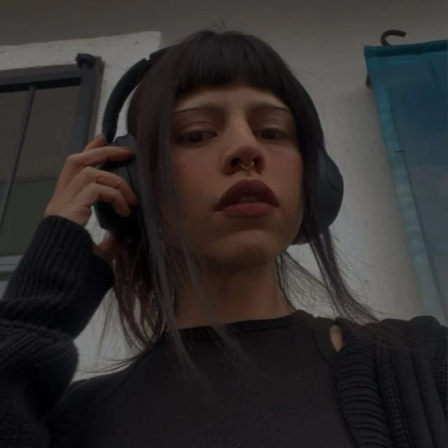
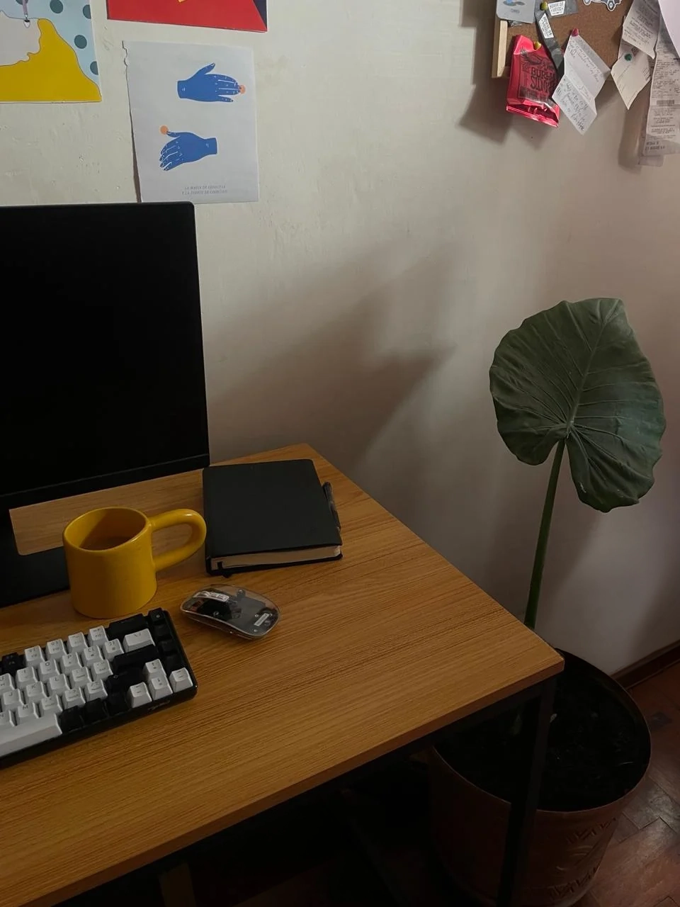
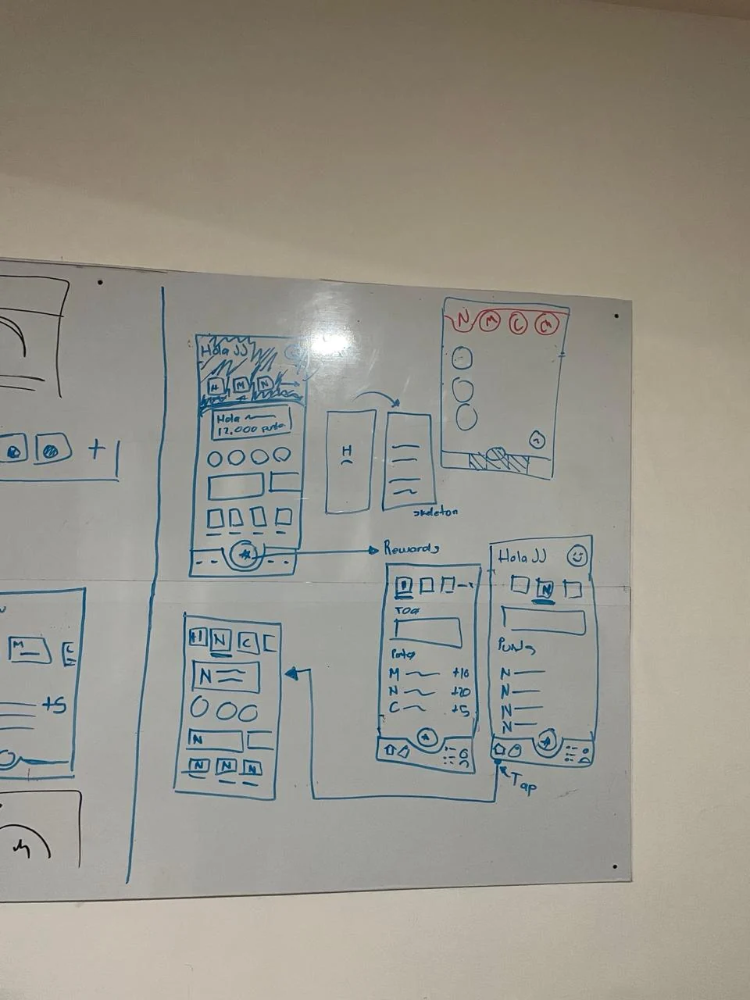
02. Fotógrafa
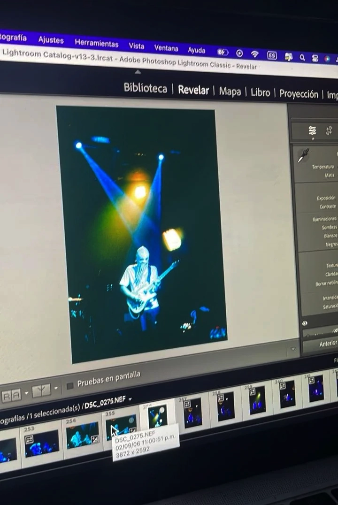
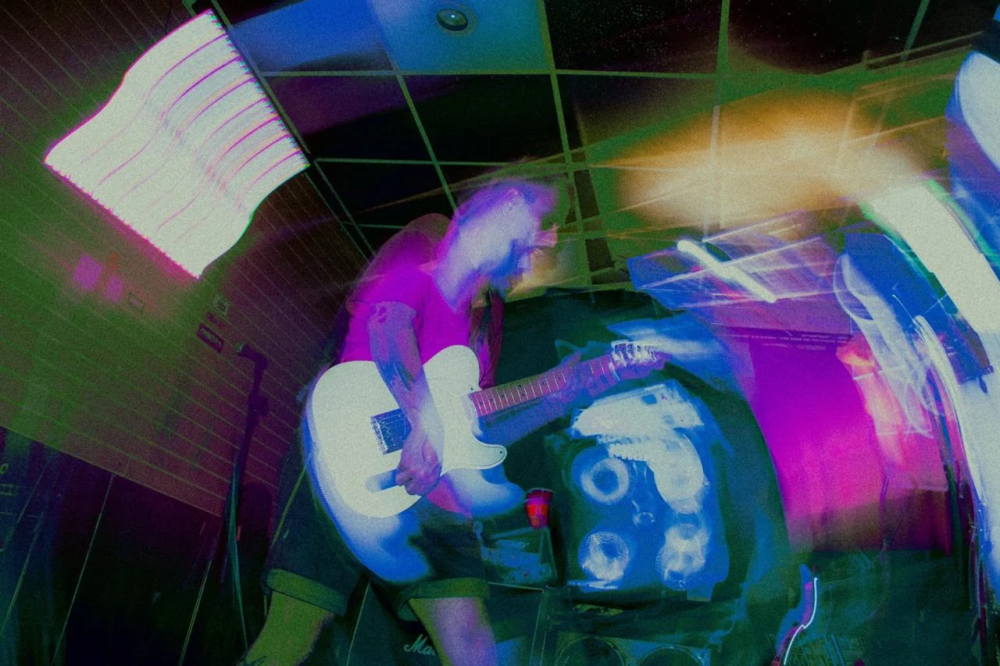
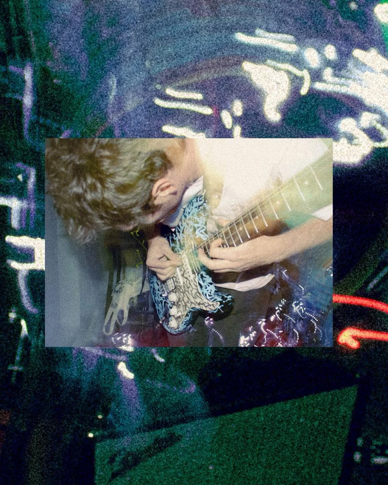
03. Gym
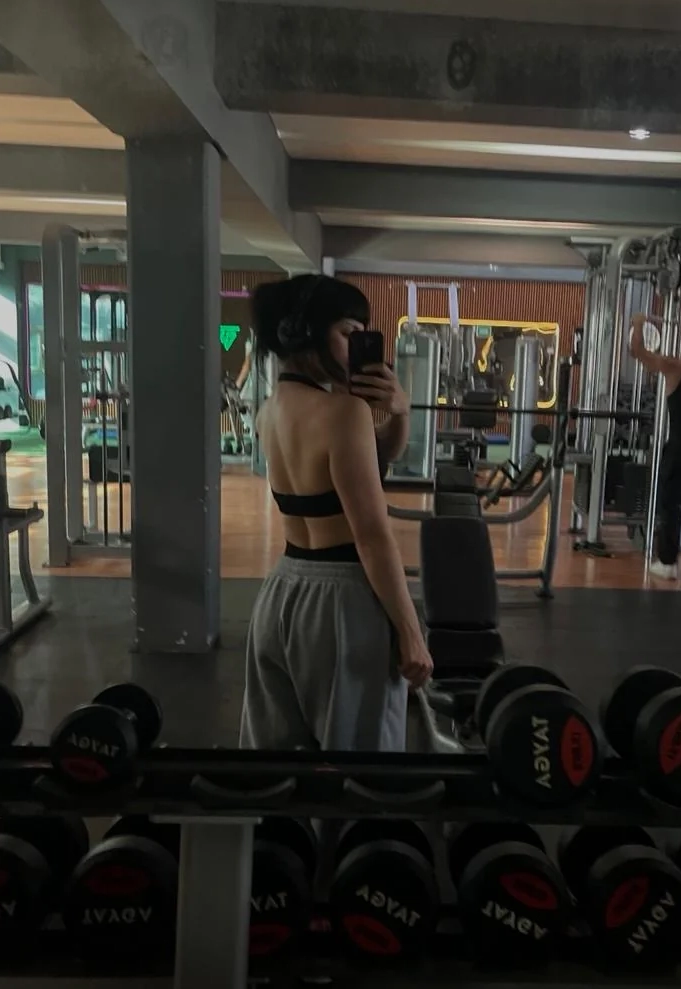
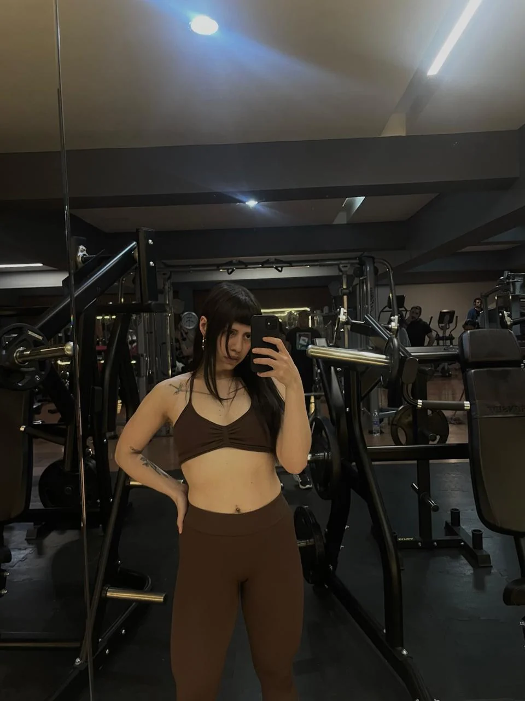
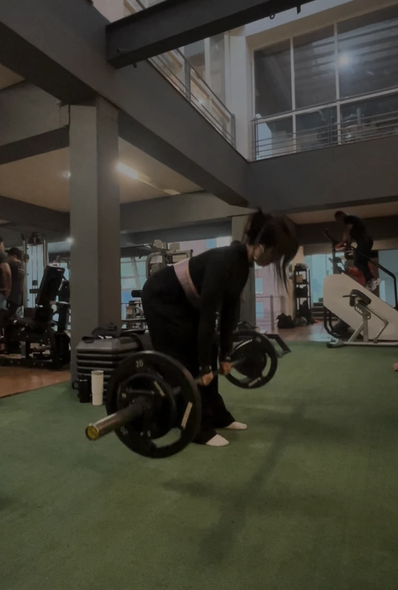
04. Tiempo libre
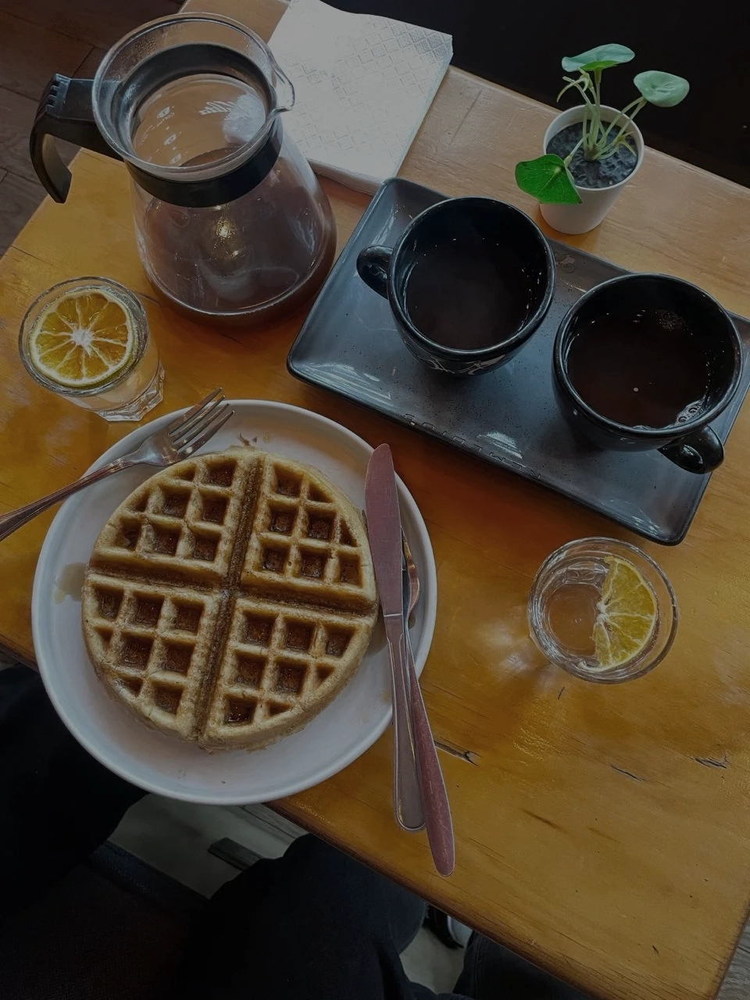
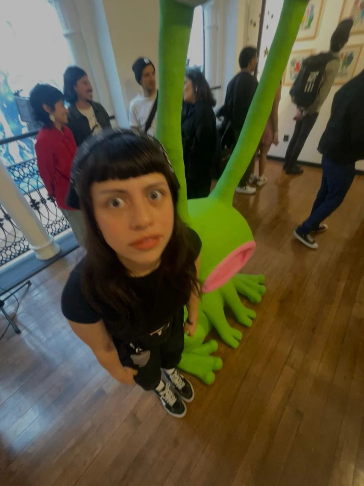
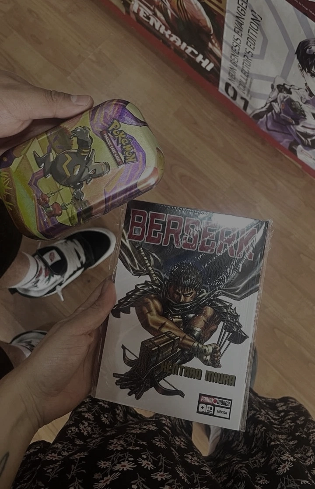